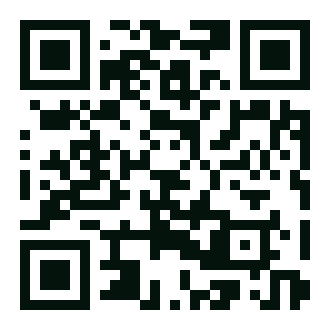

Public mandate
A national broadcaster run by the UGC, accountable to students, faculty and the public alike.
University Grants Commission of Bangladesh
শিক্ষা, গবেষণা ও তারুণ্যের জাতীয় টেলিভিশন চ্যানেল
A UGC-run satellite television channel built for the country’s tertiary education community — carrying classrooms, laboratories, festivals and futures from every campus onto one national screen.
01 — About the channel
Higher education in Bangladesh is spread across more than 160 public and private universities. Campus Bangladesh gives that community a shared channel — a place where a discovery in Rajshahi reaches a classroom in Chattogram the same week.
Operated under the University Grants Commission, the channel broadcasts free-to-air by satellite and streams everywhere else, so no learner is left outside the signal.
Connecting & collaborating tertiary education in Bangladesh.
Campus Bangladesh — channel mandateA national broadcaster run by the UGC, accountable to students, faculty and the public alike.
Free-to-air satellite plus digital streaming: campuses, hostels, homes and phones in all 64 districts.
Programmes co-produced with university media clubs, research offices and student journalists.
02 — What we do
Every hour of programming answers to one of these six pillars — the reason the channel exists.
Linking universities, regulators, industry and learners into one visible, collaborative ecosystem.
Bringing peer-reviewed work out of the journal and onto the screen, in language the public can follow.
Open lectures, expert panels and explainers that make campus expertise a public resource.
Debate, robotics, sport, culture and volunteering — the learning that happens outside the syllabus.
Skills clinics, employer conversations and career journeys that shorten the walk from campus to work.
Television craft applied to education: strong stories, real characters, and a channel students choose.
03 — Programmes
Four strands, refreshed every week and archived on demand. Sample schedule — final line-up to be announced.
A full lecture from a leading faculty member, taped before a live student audience.
Hard ideas from first-year syllabuses, unpacked on a whiteboard in twenty minutes.
Reading, note-taking and study craft, with the students who have figured it out.
One paper, one lab, one week — from hypothesis to published result.
Student teams building drones, apps, prosthetics and machines that solve local problems.
Funding calls, fellowships and how to write the proposal that wins one.
A week in the life of one campus — halls, canteens, clubs and the people in them.
Debate finals, band nights, theatre and the national culture circuit.
University sport, from the athletics meet to the intra-hall cricket rivalry.
CVs, interviews and first jobs, with recruiters saying what they actually look for.
Inside the workplaces hiring graduates — factories, studios, hospitals, startups.
One employable skill per episode, taught end to end and free to follow along.
04 — How to watch
Tune in by satellite, cable or stream. No subscription, no paywall — a public channel for a public good.
Bangabandhu-1 · Ku-band · frequency and symbol rate to be announced at launch.
Carried by national DTH and cable operators on the education tier.
Live stream and full archive on the web, plus the Campus Bangladesh app.
Now playing — Research Frontiers
Up next, 21:40 — Campus Diaries

Scan for schedules, the live stream and the full programme archive.
05 — The network
Public and private, national and specialised — campuses across the country contribute stories, faculty and student crews.
and many more joining every month 160+
06 — Get involved
Three ways to take part — whether you are a student with a camera, a researcher with a result, or a university with a story to tell.
Join a campus correspondent team: training, kit and a national audience for your reporting.
Apply to the crew →Pitch a lecture, a lab tour or an explainer segment. Our producers handle the television craft.
Pitch a segment →Co-produce a strand, host an outside broadcast, or open your archive to the network.
Start a partnership →07 — Questions
Yes. Campus Bangladesh broadcasts free-to-air by satellite and streams online without a subscription.
The channel is run by the University Grants Commission of Bangladesh, working with partner universities across the country.
Any recognised tertiary institution can apply. Write to the partnerships desk with a short note about what your campus would like to contribute.
Primarily Bangla, with English segments for research programming and subtitles on selected strands.
Yes — every programme is archived on demand so classes and study groups can use it as teaching material.